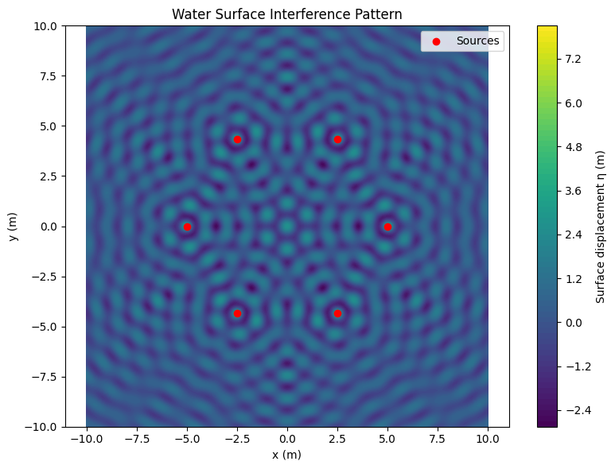

Problem 1
1. Explanation of the Topic
Interference is a wave phenomenon that occurs when two or more wavefronts overlap in space. On a water surface, this is seen as regions where wave crests reinforce or cancel one another.
- Constructive Interference: when two waves meet in phase, they amplify.
- Destructive Interference: when two waves are out of phase, they cancel.
This principle is central in understanding wave behavior, not only in water but also in acoustics, optics, and even quantum mechanics.
2. Mathematical Background
2.1 Single Point Source Wave Equation
The wave from a single point source at \((x_0, y_0)\) is given by:
Where: - \(A\) is the amplitude, - \(r = \sqrt{(x - x_0)^2 + (y - y_0)^2}\) is the distance to the point, - \(k = \frac{2\pi}{\lambda}\) is the wave number, - \(\omega = 2\pi f\) is the angular frequency, - \(\phi\) is the phase offset.
2.2 Superposition of Multiple Waves
If there are \(N\) identical, coherent sources, the total displacement at any point is:
Where \(r_i\) is the distance from the \(i\)-th source.
3. Geometry of the Sources
Sources are placed at the vertices of a regular polygon (e.g., triangle, square, hexagon), distributed uniformly on a circle of radius \(R\):
4. Python Code: Interference Simulation
import numpy as np
import matplotlib.pyplot as plt
# Wave parameters
A = 1.0 # Amplitude (m)
wavelength = 1.0 # Wavelength (m)
f = 1.0 # Frequency (Hz)
k = 2 * np.pi / wavelength # Wave number
w = 2 * np.pi * f # Angular frequency
phi = 0 # Initial phase
# Source configuration
N = 6 # Number of sources (polygon sides)
R = 5.0 # Radius of polygon
sources = [(R * np.cos(2 * np.pi * i / N), R * np.sin(2 * np.pi * i / N)) for i in range(N)]
# Grid
x = np.linspace(-10, 10, 500)
y = np.linspace(-10, 10, 500)
X, Y = np.meshgrid(x, y)
T = 0 # Time snapshot
# Function for one wave
def wave(x, y, x0, y0, A, k, w, phi, t):
r = np.sqrt((x - x0)**2 + (y - y0)**2)
r[r == 0] = 1e-6
return A / np.sqrt(r) * np.cos(k * r - w * t + phi)
# Total wave
eta = np.zeros_like(X)
for x0, y0 in sources:
eta += wave(X, Y, x0, y0, A, k, w, phi, T)
# Plot
plt.figure(figsize=(8, 6))
plt.contourf(X, Y, eta, levels=100, cmap='viridis')
plt.colorbar(label='Surface displacement η (m)')
plt.scatter(*zip(*sources), color='red', label='Sources')
plt.title('Water Surface Interference Pattern')
plt.xlabel('x (m)')
plt.ylabel('y (m)')
plt.axis('equal')
plt.legend()
plt.tight_layout()
plt.show()

5. Analyze the Results
- Patterns: The plot shows bright and dark zones corresponding to constructive and destructive interference, respectively. The center often shows intense oscillation due to symmetrical source alignment.
- Symmetry: Because the sources are placed symmetrically (e.g., equilateral triangle, square), the interference patterns exhibit symmetrical structures.
- Parameter Dependence:
- Reducing the wavelength \(\lambda\) increases the number of fringes (denser pattern).
- Changing the phase \(\phi\) of one source distorts symmetry and shifts interference nodes.
- Increasing the amplitude \(A\) intensifies the wave height without affecting the pattern geometry.
6. Conclusions
This simulation of wave interference on a water surface highlights the rich dynamics of wave superposition. By summing the displacements from multiple coherent sources, we observe:
- Constructive interference forming crests where waves align in phase.
- Destructive interference resulting in cancellation zones where waves are out of phase.
- Real-world relevance: These insights apply to sound waves, light diffraction, radar systems, and ocean engineering.
Using simple principles of circular wave propagation and numerical tools like Python, students can intuitively understand: - how phase, amplitude, and geometry control wave outcomes, - and how symmetry and coherence lead to organized patterns.
This makes the task valuable both for developing computational skills and for reinforcing theoretical physics concepts.
7. Explanation of the Code
- Parameters: The values of amplitude \(A\), wavelength \(\lambda\), frequency \(f\), wave number \(k = \frac{2\pi}{\lambda}\), and angular frequency \(\omega = 2\pi f\) are defined at the beginning.
- Source Placement: Sources are placed symmetrically at the vertices of a regular polygon. Their coordinates are computed using trigonometry on a circle of radius \(R\).
- Grid Construction: A meshgrid of \((x, y)\) coordinates is created using
np.meshgrid()to simulate the water surface over a region. - Wave Function: A function calculates wave amplitude at each point from a single source based on distance \(r\) and applies the formula:
$$ \eta(x, y, t) = \frac{A}{\sqrt{r}} \cos(kr - \omega t + \phi) $$
- Superposition: The contributions of all sources are summed point-wise using a loop.
- Visualization: A 2D contour plot is generated with
plt.contourf(), which maps wave height to color gradients. Red and blue zones highlight wave peaks and troughs, while white or neutral zones indicate destructive cancellation.
8. Explanation of the Solution
- Step 1: We chose a regular polygon (e.g., equilateral triangle) to place wave sources in a symmetric layout, which helps visualize balanced interference.
- Step 2: We wrote the wave equation for each point source and applied the principle of superposition to calculate net displacement at each grid point.
- Step 3: We explored the resulting interference pattern, studying how parameters like \(\lambda\), \(\phi\), and number of sources affect the structure.